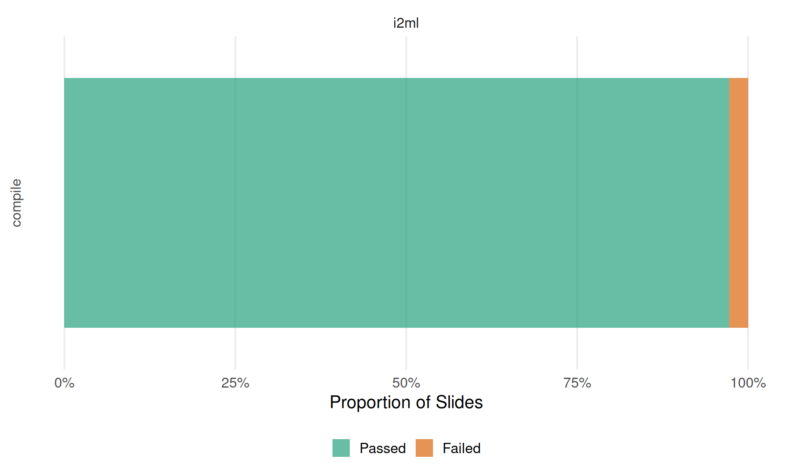

This document tabulates the state of the slides in
lecture_*/slides/<chapter>/ based on
lecture_*/slides-pdf/Displaying the latest commits of the lecture service repository and each of the currently included lectures (for debugging and race condition mitigation (kind of)).
| Branch | Last Commit | By | Message |
|---|---|---|---|
| main | 2026-02-17 18:39:42 | Lukas Burk | Add missing gitignore |
| Lecture | Branch | Last Commit | By | Message |
|---|---|---|---|---|
| lecture_i2ml | master | 2026-02-17 18:47:26 | GitHub | Update service (#1315) |
If you’re missing a lecture here after rendering this site
interactively, you might have to add them to the
included_lectures files or ensure they are downloaded
correctly.

lecture_advml/slides/gaussian-processes/slides-gp-bayes-lm.tex
\___________/ \________________/ \________________/
lecture chapter <slide-name>
lecture_advml/slides-pdf/slides-gp-bayes-lm.pdf
\___________________/
pdf_static / "Reference PDF"Tables are organized by lecture (first level) and lecture chapters
corresponding to folders in slides/<chapter> (second
level), with a table per chapter. chapters ignore certain folders like
attic and all.
<slide-name> with a
link to the compiled .tex file (if it compiles).latexmk -pdf. This can depend on the
availability of specific LaTeX dependencies, but assuming they are not
the issue, this usually indicates syntax issues or things like
\includegraphics calls using relative paths that work on
Overleaf but not locally.<slide-name>.tex against
slides-pdf/<slide-name>.pdf using
diff-pdf-visually:
diff-pdf (at a lower resolution
than the originals).10 chapters with a total of 72 slides
| Slide | Compiles? | Note |
|---|---|---|
| slides-forests-bagging-deepdive | ✅ | |
| slides-forests-bagging | ✅ | |
| slides-forests-basics | ✅ | |
| slides-forests-featureimportance | ❌ |
1323: ! Package keyval Error: footnotesize undefined. 1323: See the
keyval package documentation for explanation. 1323: Type H |
| slides-forests-nutshell | ✅ | |
| slides-forests-oob | ✅ | |
| slides-forests-proximities | ✅ |
| Slide | Compiles? | Note |
|---|---|---|
| slides-knn | ✅ |
| Slide | Compiles? | Note |
|---|---|---|
| slides-basics-data | ✅ | |
| slides-basics-learner | ✅ | |
| slides-basics-learnercomponents-hro | ❌ |
1116: ! Package keyval Error: footnotesize undefined. 1116: See the
keyval package documentation for explanation. 1116: Type H |
| slides-basics-models-parameters | ✅ | |
| slides-basics-nutshell | ✅ | |
| slides-basics-optimization | ❌ |
1133: ! Package keyval Error: small undefined. 1133: See the keyval
package documentation for explanation. 1133: Type H |
| slides-basics-riskminimization | ✅ | |
| slides-basics-task | ✅ | |
| slides-basics-whatisml | ✅ |
| Slide | Compiles? | Note |
|---|---|---|
| slides-nested-nestedintro | ✅ | |
| slides-nested-nestedresampling | ✅ | |
| slides-nested-trainvalidtest | ✅ |
| Slide | Compiles? | Note |
|---|---|---|
| slides-mlp-univ-approx-theorem | ✅ | |
| slides-mlps-xor | ✅ | |
| slides-nn-intro-introduction | ❌ | 1445: ! Undefined control sequence. 1445: GenericError … 1445: #4 errhelp @err@ … |
| slides-nn-mlps-matrix-notation | ✅ | |
| slides-nn-mlps-mlps-as-predictor | ✅ | |
| slides-nn-mlps-multiclass-classification | ✅ | |
| slides-nn-mlps-multilayer-FNNs | ❌ | 1510: ! Undefined control sequence. 1510: GenericError … 1510: #4 errhelp @err@ … |
| slides-nn-mlps-single-hidden-layer-networks | ✅ | |
| slides-nn-mlps-single-neuron | ✅ | |
| slides-nn-nutshell | ✅ |
| Slide | Compiles? | Note |
|---|---|---|
| slides-regression-deepdive-ols | ✅ | |
| slides-regression-linearmodel-l1 | ✅ | |
| slides-regression-linearmodel-l2 | ✅ | |
| slides-regression-nutshell | ✅ | |
| slides-regression-polynomials | ✅ |
| Slide | Compiles? | Note |
|---|---|---|
| slides-tuning-advanced | ✅ | |
| slides-tuning-basicalgos | ✅ | |
| slides-tuning-intro | ✅ | |
| slides-tuning-nutshell | ✅ | |
| slides-tuning-pipelines | ✅ | |
| slides-tuning-practical | ✅ | |
| slides-tuning-tuningproblem | ✅ |
After compilation, .fls recorder files capture every
file the TeX engine opened. This allows robust detection of which
figures each slide actually uses, including dynamically constructed
paths (e.g. \foreach loops) that regex-based parsing
misses.
Figures in figure/ or figure_man/ that are
not referenced by any slide are orphaned. Figures
referenced by slides but missing from disk are
missing.
| Lecture | Chapter | Figures | Orphaned | Attic | Missing | Figs (man) | Orphaned (man) | Missing (man) |
|---|---|---|---|---|---|---|---|---|
| lecture_i2ml | cart | 83 | 36 | 0 | 0 | 24 | 19 | 0 |
| lecture_i2ml | evaluation | 63 | 2 | 0 | 0 | 26 | 1 | 0 |
| lecture_i2ml | forests | 23 | 7 | 0 | 0 | 24 | 3 | 0 |
| lecture_i2ml | knn | 9 | 0 | 0 | 0 | 0 | 0 | 0 |
| lecture_i2ml | ml-basics | 44 | 17 | 0 | 0 | 39 | 9 | 0 |
| lecture_i2ml | nested-resampling | 3 | 0 | 0 | 0 | 3 | 0 | 0 |
| lecture_i2ml | neural-networks | 120 | 43 | 0 | 0 | 11 | 1 | 0 |
| lecture_i2ml | supervised-classification | 31 | 5 | 0 | 0 | 42 | 13 | 0 |
| lecture_i2ml | supervised-regression | 41 | 4 | 0 | 0 | 6 | 2 | 0 |
| lecture_i2ml | tuning | 21 | 0 | 0 | 0 | 11 | 0 | 0 |
36 orphaned figure(s) in figure/:
a.pdfcart_dis_2.pdfcart_intro_1.pdfcart_intro_2.pdfcart_intro_classification_tree_wide.pdfcart_intro_regression_tree_wide.pdfcart_intro_tree_area_depth-1_3classes.pdfcart_intro_tree_area_depth-3_3classes.pdfcart_intro_tree_area_depth-3_contin.pdfcart_intro_tree_area_depth-3_contin.pngcart_intro_tree_depth-3_3classes.pdfcart_intro_tree_depth-3_contin.pdfcart_intro_tree_depth-3_contin.pngcart_splitcomp_3_part.pngcart_splitcomp_3.pdfcart_splitcomp_4.pdfcart_splitcriteria_1.pdfcart_splitcriteria_2.pdfcart_splitcriteria_3.pdfcart_stopprun_1.pdfcart_stopprun_2.pdfcart_stopprun_3.pdfcart_stopprun_4.pdfcart_treegrow_1.pdfcart_treegrow_12.pdfcart_treegrow_2.pdfcart_treegrow_22.pdfcart_treegrow_3.pdfcart_treegrow_32.pdfcart_treegrow_4.pdfL2loss-treesplit.pdfoverfitting-tree.pdfsplitcrit_optimal-constant-classif.pdfsurrogate-splits.pdft.pdftree-depth3-area-withblacklines.pdf19 orphaned figure(s) in
figure_man/:
CART_reg_example.pdflabelling_of_tree.pngrpart.control-options.pngtree_depth1_area_regr.pngtree_depth1_area.pngtree_depth1_structure_regr.pngtree_depth2_area_regr.pngtree_depth2_area.pngtree_depth2_structure_regr.pngtree_depth2_structure.pngtree_depth3_area_nopoints.pngtree_depth3_area_regr.pngtree_depth3_area-blacklines.pngtree_depth3_area.pngtree_depth3_structure_regr.pngtree_depth3_structure.pngtree-growing-x.pngtree-growing-y.pngtree-overfitting-prediction.pdf2 orphaned figure(s) in figure/:
cost_curve_compare_trivial.pngeval_mclass_2.pdf1 orphaned figure(s) in
figure_man/:
cost-curves-0.png7 orphaned figure(s) in figure/:
forest-fimp_gini.pngnutshell_classif_combined_2.pdfnutshell_classif_forest_combined.pdfnutshell_classif_forest_ensemblesize_1.pdfnutshell_classif_forest_ensemblesize_3.pdfnutshell_classif_trees_combined.pdfnutshell_forest_ensemblesize_2.pdf3 orphaned figure(s) in
figure_man/:
forest-fimp_idea.pngforest-fimp_impurity.pngforest-permutation-imp.png17 orphaned figure(s) in figure/:
grad_desc_alpha1.pdfgrad_desc_alpha2.pdfgrad_desc_alpha3.pdfgrad_desc1.pdfgrad_desc2.pdfgrad_desc3.pdfgrad_desc4.pdfgrad_desc5.pdfgrad_desc6.pdfgrad_desc7.pdfgrad.pdfhess1.pdfhess2.pdflm_reg1.pdflm_reg3.pdflm_reg4.pdfnutshell-ml-basics-risk-surface.R9 orphaned figure(s) in
figure_man/:
CatDog_Learning_example.pngCatDog_Prediction_example.pngmckenzie_ai.jpegModel_Classification_Plot.pngModel_Regression_Plot.pngNetwork_nutshell_slides.pngnutshell-ml-basic-1-loss-sqrd.pngnutshell-ml-basic-2-risk.pngnutshell-titlefigure.png43 orphaned figure(s) in figure/:
adaline.pngai_winter.jpgalphafold.jpgalphago.pngbostondynamic.pngchatGPT.pngDALLE.pngdl_feature2.pngdl_timeline.pngDL_tools.pnggpt3.pnghierarchical_sequence.pngibmsupercomputer.jpglogistic_regression.pngmaskrcnn.pngmp_neuron.pngnmt.pngorvsxor.pngperceptron_new.pngrosenblatt_perceptron.jpgsegmentation.pngselfdriving.jpgsentiment_analysis.pngsinlay_eight.pngsinlay_eleven.pngsinlay_five.pngsinlay_four.pngsinlay_nine.pngsinlay_one.pngsinlay_seven.pngsinlay_ten.pngsinlay_three.pngsinlay_twelve.pngsinlay_two.pngspeech_goog.jpgstep1.pngstep2.pngunnamed-chunk-6-2.pdfunnamed-chunk-6-3.pdfunnamed-chunk-6-4.pdfunnamed-chunk-6-5.pdfunnamed-chunk-6-6.pdfunnamed-chunk-6-7.pdf1 orphaned figure(s) in
figure_man/:
nutshell-nn-learning-update.png5 orphaned figure(s) in figure/:
approach_disc_candidates.pngapproach_disc_fitted.pngdisc_analysis-lda_1.pngnutshell_classif_binary_task.pngpreds_with_probs-logistic.png13 orphaned figure(s) in
figure_man/:
loss_plot.pngnutshell-classification_bayes_theorem.pngnutshell-classification-bayes-theorem.pngnutshell-classification-class-probability-naive-bayes.pngnutshell-classification-classifier-function-naive-bayes.pngnutshell-classification-distributions-naive-bayes.pngnutshell-classification-input-naive-bayes.pngnutshell-classification-likelihood-not-too-good.pngnutshell-classification-likelihood-very-good.pngnutshell-classification-likelihoods.pngnutshell-classification-naive-bayes-learning.pngnutshell-classification-naive-bayes-prediction.pngnutshell-classification-text-box-prior.png4 orphaned figure(s) in figure/:
reg_l2_sse_optim_1.pdfreg_l2_sse_optim_2.pdfreg_poly_univ_1.pdfreg_poly_univ_3.pdf2 orphaned figure(s) in
figure_man/:
l2-vs-l1-1.pdfl2-vs-l1-2.pdf